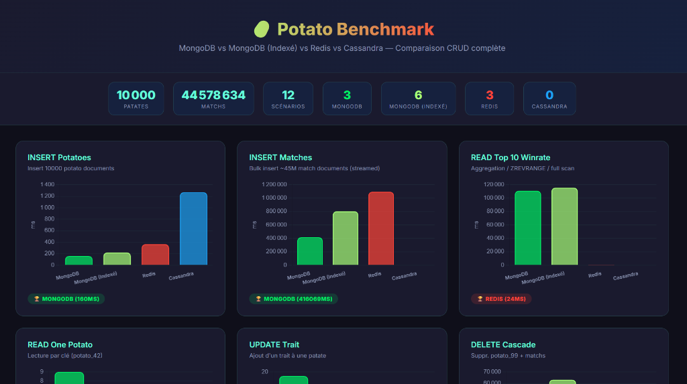
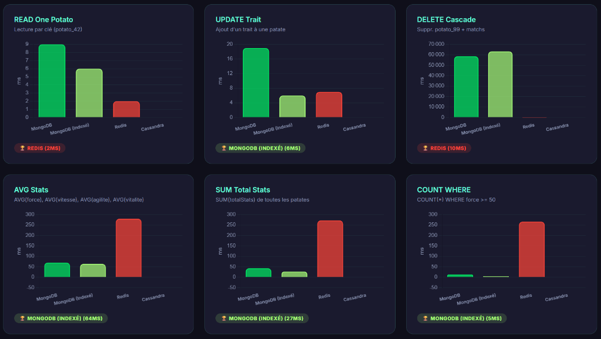
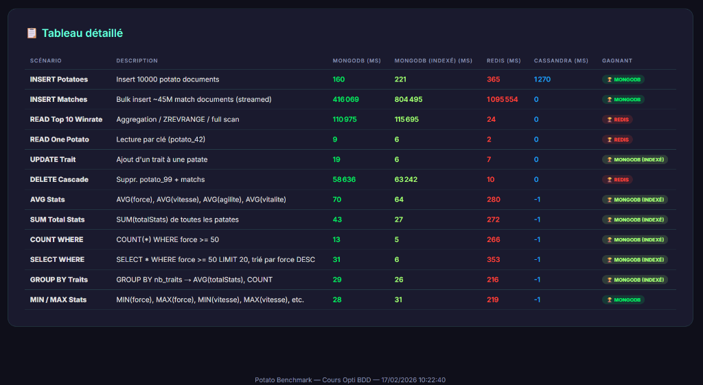

📋 Rapport de Benchmark NoSQL : Volume Extrême
Ce rapport détaille les performances de trois architectures de stockage face à un volume de données massif : 10 000 patates et ~45 Millions de matchs.
🚀 Synthèse des Résultats
Le benchmark met en évidence une spécialisation forte entre les technologies choisies :
- Redis domine largement sur la réactivité en temps réel et les opérations atomiques (Leaderboards).
- MongoDB (avec indexation) reste la solution la plus polyvalente pour les requêtes analytiques complexes et les filtrages ad-hoc.
- Cassandra a été écarté pour ce volume en raison de limitations matérielles lors de l'ingestion massive.

📊 Analyse des Opérations CRUD
L'utilisation des Sorted Sets dans Redis permet d'obtenir le Top 10 des winrates en seulement 24ms, là où MongoDB nécessite plus de 110 secondes pour agréger 45 millions de documents.
🔍 Performances Analytiques
Pour les calculs de type AVG, SUM ou GROUP BY, MongoDB Indexed surpasse Redis (implémentation client) par un facteur de 5. L'indexation sur MongoDB réduit le temps des recherches filtrées (SELECT WHERE) de 31ms à 6ms.
📝 Conclusion Finale
Le choix de la base de données doit être guidé par le cas d'usage : Redis pour la vélocité et les fonctionnalités de ranking, MongoDB pour la flexibilité des requêtes et l'analyse de données massives.
